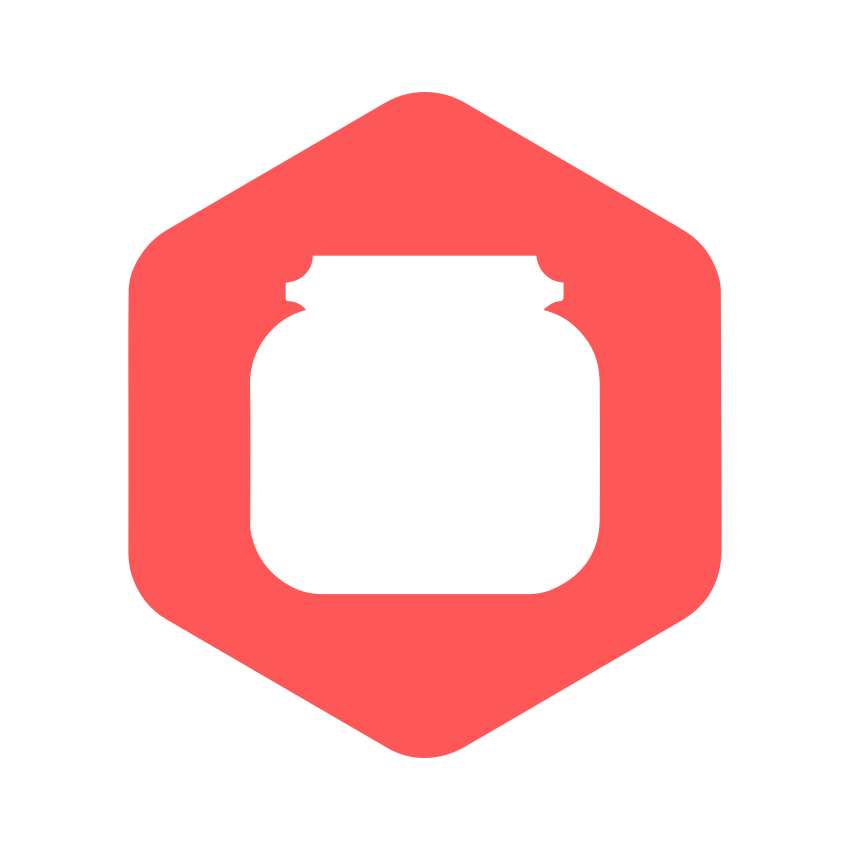

ServerJars
ServerJars automatically fetches and builds the latest versions of many different Minecraft servers, and displays them in one easy place!
ServerJars has this website, an API (docs), and an automatic updater!
ServerJars is run by Jessica S. and Juxtacloud.